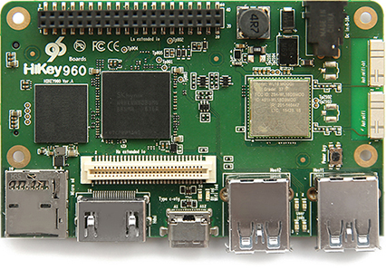
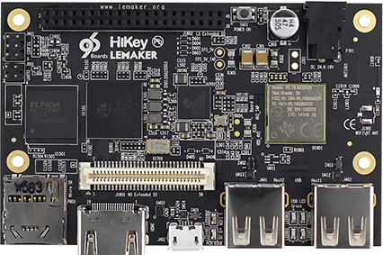

You can create builds for Nexus devices using Android Open Source Project (AOSP) builds and the relevant hardware-specific binaries. For available Android builds and targeted devices, see Source Code, Tags, and Builds.
Note: Due to hardware differences, do not use Android 4.1.1 on a Nexus 7 originally sold with Android 4.1.2 or later.
You can also create builds for HiKey Android reference boards, which are designed to help non-Nexus component vendors develop and port drivers to Android releases. Using a reference board can ease upgrade efforts, reduce time-to-market for new Android devices, lower device costs by enabling ODM/OEMs to choose from a wider range of compatible components, and increase the speed of innovation among component suppliers.
Google supports HiKey960 and HiKey certified 96Boards as Android reference boards. AOSP provides kernel source and board support for HiKey so developers can easily create and debug new and existing peripheral drivers, do kernel development, and perform other tasks with fewer OEM encumbrances.
The HiKey960 board is available in a 3GB RAM configuration from LeMaker (via Amazon.com) and from Lenovator.
Figure 2. HiKey960 board by Lenovator
Additional resources:
Use the following commands to download, build, and run Android on the HiKey960 board.
repo init -u https://android.googlesource.com/platform/manifest -b masterrepo sync -j24
wget https://dl.google.com/dl/android/aosp/arm-hikey960-NOU-7ad3cccc.tgztar xzf arm-hikey960-NOU-7ad3cccc.tgz./extract-arm-hikey960.sh
. ./build/envsetup.shlunch hikey960-userdebugmake -j32
cd device/linaro/hikey/installer/hikey960./flash-all.sh
fastboot flash boot out/target/product/hikey960/boot.imgfastboot flash dts out/target/product/hikey960/dt.imgfastboot flash system out/target/product/hikey960/system.imgfastboot flash cache out/target/product/hikey960/cache.imgfastboot flash userdata out/target/product/hikey960/userdata.img
git clone https://android.googlesource.com/kernel/hikey-linarocd hikey-linarogit checkout -b android-hikey-linaro-4.4 origin/android-hikey-linaro-4.4make ARCH=arm64 hikey960_defconfigmake ARCH=arm64 CROSS_COMPILE=aarch64-linux-android- -j24
arch/arm64/boot/dts/hisilicon/hi3660-hikey960.dtb) to the hikey-kernel directory as file hi3660-hikey960.dtb.(arch/arm64/boot/Image.gz) to the hikey-kernel directory as file Image.gz-hikey960.make bootimage -j24
To set random serial number, run:
fastboot getvar nve:SN@16_DIGIT_NUMBER
Bootloader exports the generated serial number to kernel via
androidboot.serialno=.
Edit the device/linaro/hikey/hikey960/BoardConfig.mk parameter
BOARD_KERNEL_CMDLINE and configure the video setting.
Example setting for a 24" monitor is video=HDMI-A-1:1280x800@60.
The HiKey board (also known as HiKey620) is available in 1GB RAM and 2GB RAM configurations from Lenovator:
Figure 1. HiKey board by Lenovator
Additional resources:
Use the following commands to download, build, and run Android on the HiKey board.
repo init -u https://android.googlesource.com/platform/manifest -b masterrepo sync -j24
wget https://dl.google.com/dl/android/aosp/linaro-hikey-20170523-4b9ebaff.tgztar xzf linaro-hikey-20170523-4b9ebaff.tgz./extract-linaro-hikey.sh
apt-get install mtools
. ./build/envsetup.shlunch hikey-userdebugmake -j32
Note: For 4GB eMMC, instead of $ make -j32
use: $ make -j32 TARGET_USERDATAIMAGE_4GB=true.
/dev/ttyUSB1).cd device/linaro/hikey/installer/hikey./flash-all.sh /dev/ttyUSB1 [4g]
fastboot flash boot out/target/product/hikey/boot.imgfastboot flash -w system out/target/product/hikey/system.img
git clone https://android.googlesource.com/kernel/hikey-linarocd hikey-linarogit checkout -b android-hikey-linaro-4.9 origin/android-hikey-linaro-4.9make ARCH=arm64 hikey_defconfigmake ARCH=arm64 CROSS_COMPILE=aarch64-linux-android- -j24
/kernel/hikey-linaro):
arch/arm64/boot/dts/hisilicon/hi6220-hikey.dtb) to the
hikey-kernel directory as file hi6220-hikey.dtb-4.9.(arch/arm64/boot/Image-dtb) to the
hikey-kernel directory as file Image-dtb-4.9.make bootimage -j24
Edit device/linaro/hikey/hikey/BoardConfig.mk parameter
BOARD_KERNEL_CMDLINE and configure the video setting.
Example setting for a 24" monitor: video=HDMI-A-1:1280x800@60.
Set the J2 low speed expansion connector to 1 - Gnd, 11 - Rx, 13 - Tx. For details, refer to the HiKey user guide.